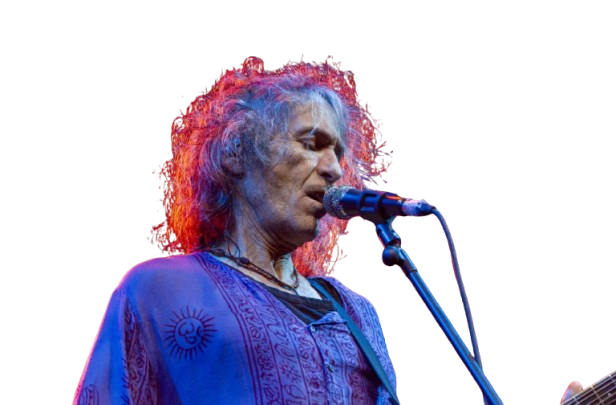

"Este es un espécimen curioso. Lo llaman Robe, aunque su verdadero nombre se pierde en el eco de las cadenas. Es un alma desaliñada, con el pelo revuelto como si hubiera peleado con un huracán y perdido. Canta sobre cosas rotas, corazones destripados y noches que apestan a whisky barato. Es perfecto para este lugar: un poeta que no sabe que está muerto por dentro, o tal vez sí lo sabe y le gusta. Creo que lo dejaré pudrirse un poco más… o hasta que escriba algo que me haga querer cortarle la lengua. Uno nunca sabe con estos trovadores."
 Siguiente Desdichado